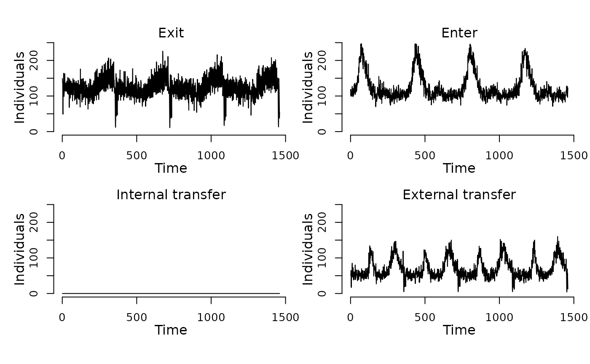
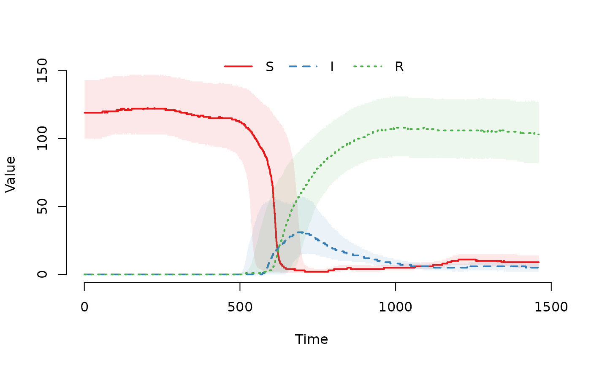
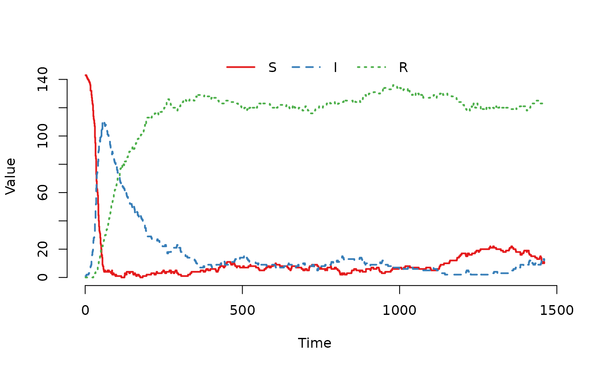

Synthetic dataset containing the initial number of susceptible, infected, and recovered cattle (individuals) across 1,600 cattle herds (nodes). Provides a heterogeneous population structure for demonstrating SIR model simulations in a compartmental modeling context.
Value
A data.frame with 1,600 rows (one per node) and 3
columns:
- S
Number of susceptible cattle (individuals) in the herd (node)
- I
Number of infected cattle (individuals) in the herd (node) (all zero at start)
- R
Number of recovered cattle (individuals) in the herd (node) (all zero at start)
Details
This dataset represents initial disease states in a synthetic population of 1,600 cattle herds (nodes). Each row represents a single herd (node).
The data contains:
- S
Total susceptible cattle (individuals) in the node
- I
Total infected cattle (individuals) (initialized to zero)
- R
Total recovered cattle (individuals) (initialized to zero)
The herd size distribution is synthetically generated to reflect heterogeneity typical of large-scale populations, making it suitable for illustrating how to incorporate scheduled events in the SimInf framework.
See also
SIR for creating SIR models with this
initial state and events_SIR for associated
movement and demographic events
Examples
## For reproducibility, call the set.seed() function and specify the
## number of threads to use. To use all available threads, remove the
## set_num_threads() call.
set.seed(123)
set_num_threads(1)
## Create an 'SIR' model with 1600 cattle herds (nodes) and initialize
## it to run over 4*365 days. Add one infected animal to the first
## herd to seed the outbreak. Define 'tspan' to record the state of
## the system at daily time-points. Load scheduled events for the
## population of nodes with births, deaths and between-node movements
## of individuals.
u0 <- u0_SIR()
u0$I[1] <- 1
model <- SIR(
u0 = u0,
tspan = seq(from = 1, to = 4*365, by = 1),
events = events_SIR(),
beta = 0.16,
gamma = 0.01
)
## Display the number of cattle affected by each event type per day.
plot(events(model))

## Run the model to generate a single stochastic trajectory.
result <- run(model)
## Plot the median and interquartile range of the number of
## susceptible, infected and recovered individuals.
plot(result)

## Plot the trajectory for the first herd.
plot(result, index = 1)

## Summarize the trajectory. The summary includes the number of events
## by event type.
summary(result)
#> Model: SIR
#> Number of nodes: 1600
#>
#> Transitions
#> -----------
#> S -> beta*S*I/(S+I+R) -> I
#> I -> gamma*I -> R
#>
#> Global data
#> -----------
#> Number of parameters without a name: 0
#> - None
#>
#> Local data
#> ----------
#> Parameter Value
#> beta 0.16
#> gamma 0.01
#>
#> Scheduled events
#> ----------------
#> Exit: 182535
#> Enter: 182685
#> Internal transfer: 0
#> External transfer: 101472
#>
#> Network summary
#> ---------------
#> Min. 1st Qu. Median Mean 3rd Qu. Max.
#> Indegree: 40.0 57.0 62.0 62.1 68.0 90.0
#> Outdegree: 36.0 57.0 62.0 62.1 67.0 89.0
#>
#> Compartments
#> ------------
#> Min. 1st Qu. Median Mean 3rd Qu. Max.
#> S 0.0 5.0 13.0 55.6 112.0 219.0
#> I 0.0 0.0 4.0 10.9 11.0 168.0
#> R 0.0 0.0 62.0 58.0 105.0 221.0